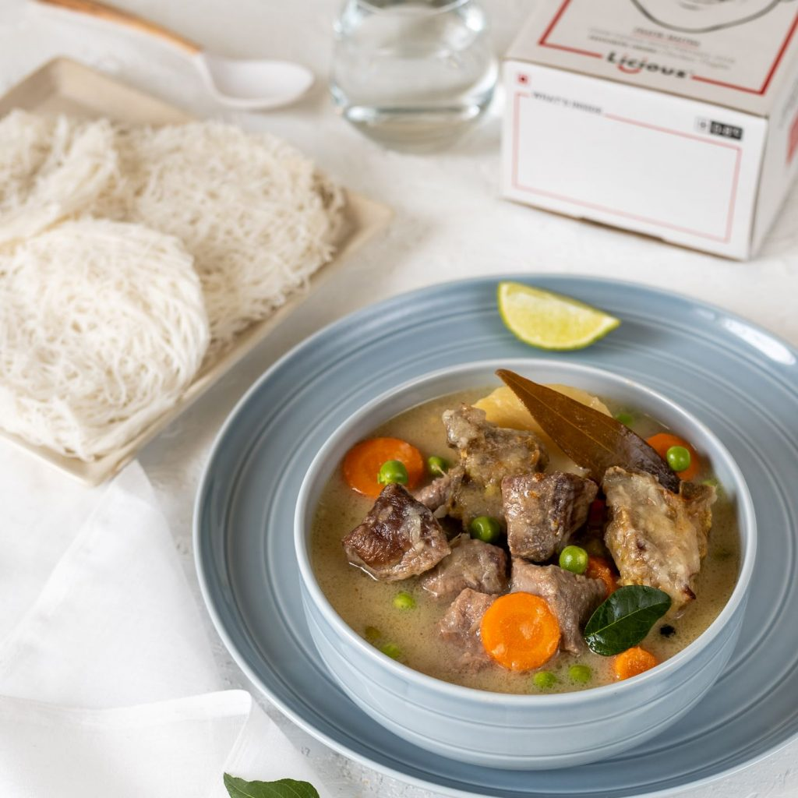
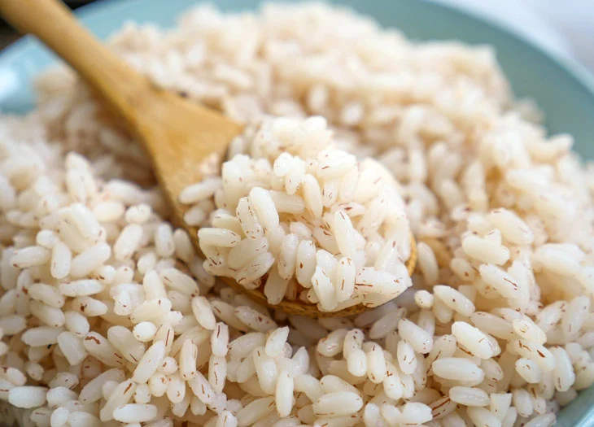
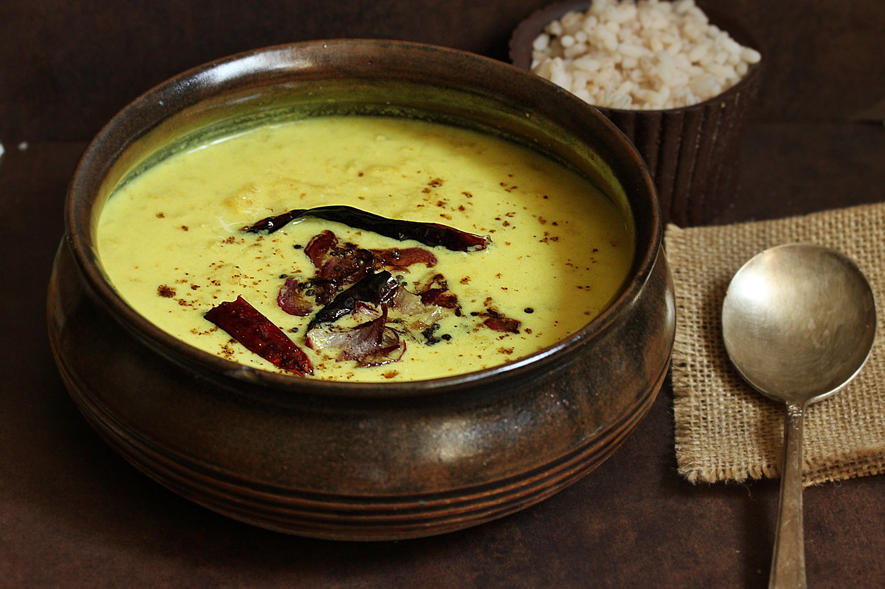
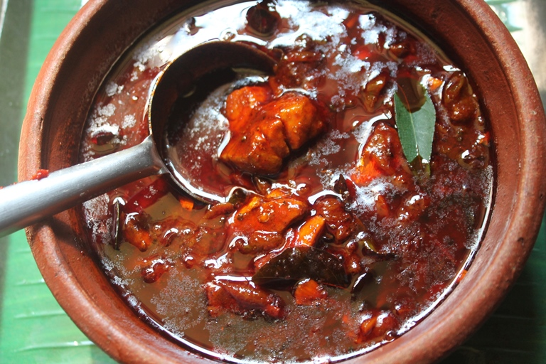
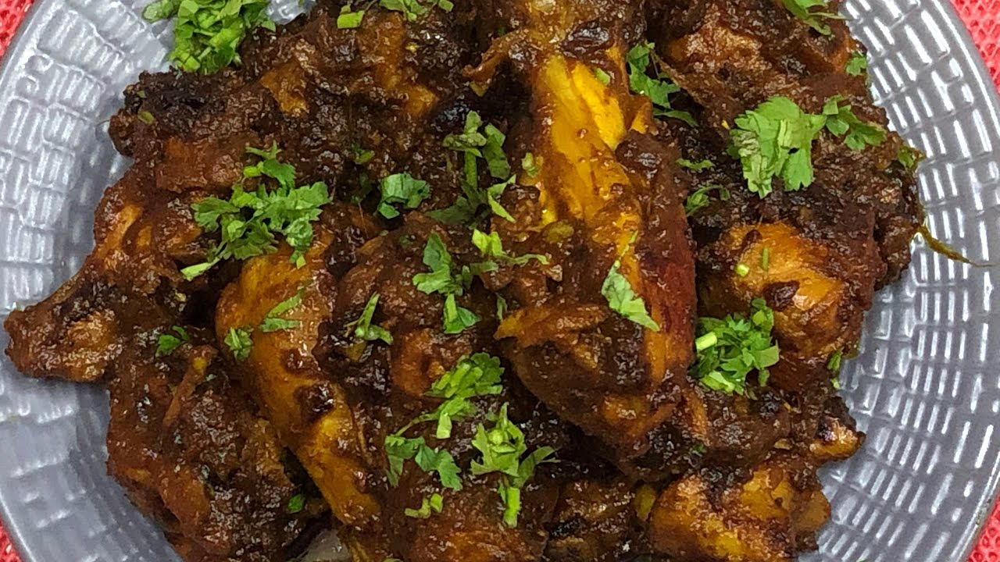
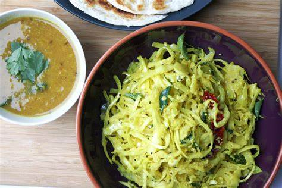

Kerala style beef cutlets is a crunchy snack and I make it often because it is bite-size and easy to munch.
Idiyappam
Idiyappam, also known as string hopper / indiappa is a rice noodle dish originating from the Indian states of Kerala.

mutton stew
In a large Dutch oven, heat the oil over medium heat until it begins to glisten. Stir in the onions, garlic, carrots, celery and fresh rosemary

matta rice
RoseMatta rice is an indigenous variety of rice grown in the Palakkad district of Kerala, India.

pulisseri
Pulissery is an authentic Kerala recipe made with buttermilk and cucumber. A perfect blend of subtle flavours.
beef fry
Kerala style Beef fry or Nadan Beef fry is an easy recipe with minimal ingredients. Marinate the beef with spices

Fish curry
This fish curry recipe comes with special additions of tamarind extract and curry leaves, simmered with fish and coconut paste.

Chicken fry
After the buttermilk soak, dredge the chicken pieces in seasoned flour, and fry them in hot oil until crisp and golden. Parmesan Panko Chicken Poppers

cabbagefry
Cabbage Thoran is a stir fry made using cabbage and coconut. You can prepare the thoran using cabbage, or a combination of cabbage and carrot, or even cabbage,
fish fry
A lovely serving of fried fish from down South. Fish enriched with ginger, methi seeds, coriander powder and fried crisp.